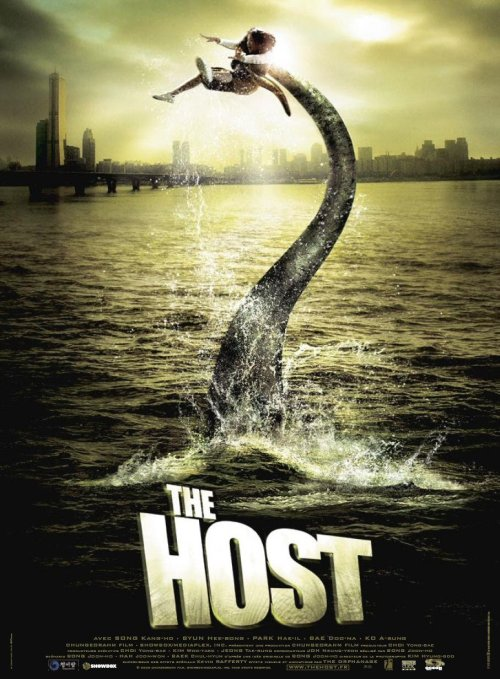
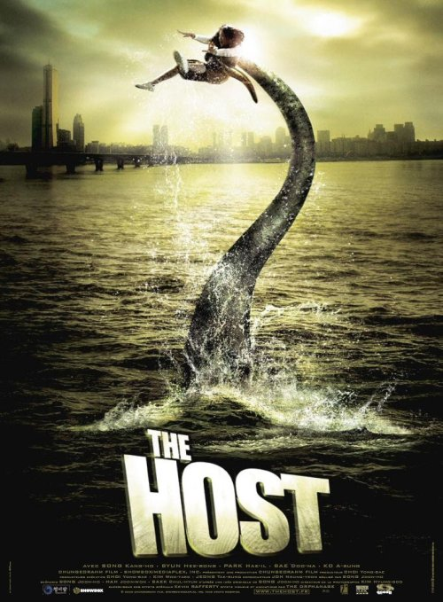
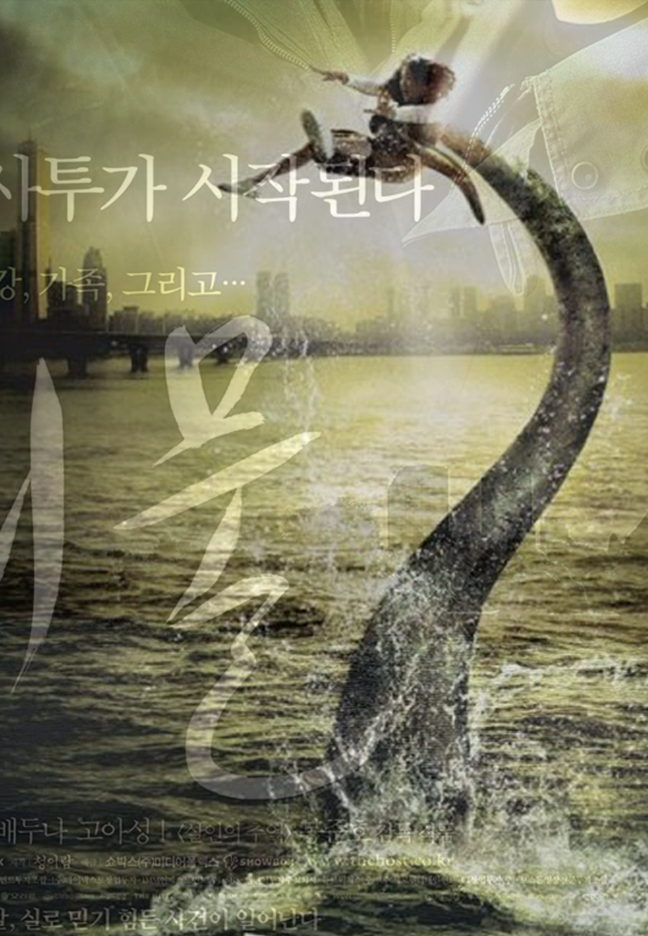
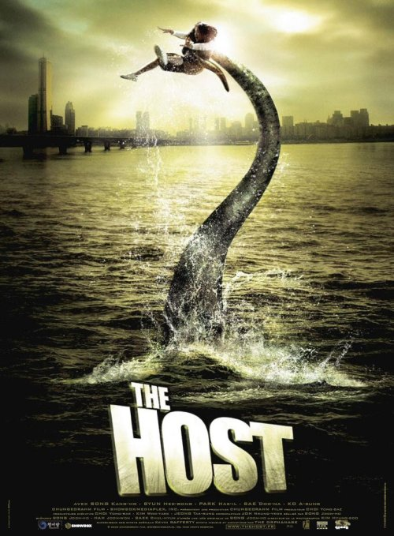

The Host
Bong Joon-ho
In 2000, an American military pathologist orders his Korean assistant to dump 200 bottles of formaldehyde down a drain leading into the Han River. Over the next several years, there are sightings of a strange amphibious creature in the waterway, and the fish in the river die off. A suicidal man, just before jumping into the river, sees something dark moving in the water.
In 2006, a slow-witted young man named Park Gang-du (Song Kang-ho) runs a small snack-bar in a park near the River with his father, Hee-bong (Byun Hee-bong). Other family members are Gang-du's daughter, Hyun-seo (Go Ah-sung); his sister Nam-joo (Bae Doona), a national medalist archer; and his brother, Nam-il (Park Hae-il), an alcoholic college graduate and former political activist.
While Gang-du is delivering food to some customers, a huge creature emerges from the Han River and begins attacking people. Gang-du sees his daughter in the crowd and tries to grab her and run. As he realizes he has grabbed the wrong girl, he sees the creature snatching Hyun-seo and diving back into the river. After a mass funeral for the victims, government representatives and the American military arrive and quarantine people who had contact with the creature, including Gang-du and his family. It is announced that the creature is not only a direct danger, but also the host of a deadly, unknown virus.
The Korean version